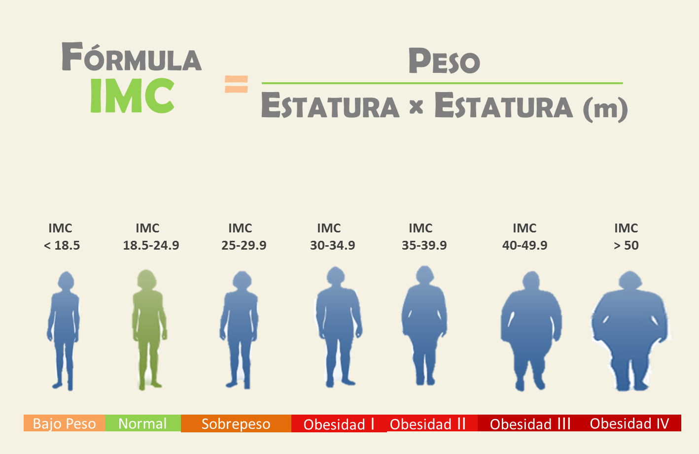

El índice de masa corporal (IMC) es un número que se calcula con base en el peso y la estatura de la persona. Para la mayoría de las personas, el IMC es un indicador confiable de la gordura y se usa para identificar las categorías de peso que pueden llevar a problemas de salud. El índice de masa corporal (IMC) es el peso de una persona en kilogramos dividido por el cuadrado de la estatura en metros. El IMC es un método de evaluación fácil y económico para la categoría de peso: bajo peso, peso saludable, sobrepeso, y obesidad.
